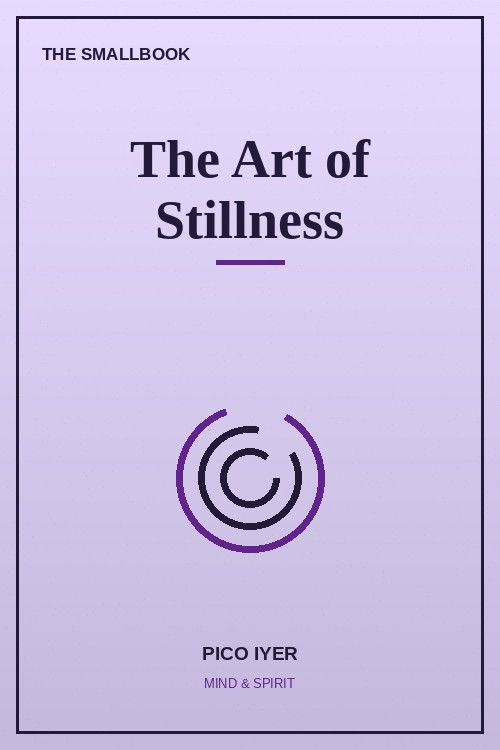

Library › Mind & Spirit
The Art of Stillness - Summary & Key Lessons

Adventures in going nowhere, for people who go everywhere.
📖 OPEN THE FULL INTERACTIVE BREAKDOWN →🌐 Read it in Hindi, Hinglish, Gujarati, Tamil & 22 more languages, with audio.
💡 The Big Idea
Travel writer Pico Iyer spent his life going everywhere, then noticed that the people he most admired, monks, artists, Leonard Cohen, were going nowhere on purpose. Stillness, he argues, is not the absence of life but its processing plant: where experience becomes understanding, and where we recover the self that motion keeps outrunning. In a world of phones and feeds, going nowhere is the fastest way to get somewhere that matters.
🧠 The 8 Key Lessons
Lesson 1: Going Nowhere Is a Destination
The Art of Stillness
Pico Iyer reframes retreat as travel: a trip to the one place you never visit, your own unprocessed life. Experiences pile up like undeveloped film on people who never stop; nothing becomes memory, insight or gratitude. Stillness is where the film develops. His claim is practical, not mystical: the quality of everything you do improves in proportion to the pauses where you digest what you have done.
📖 Example: Leonard Cohen, at the height of success, sat in a monastery for five years. He told Pico Iyer the stillness gave him back his work and his mind. The world's great movers, Pico Iyer noticed, kept scheduling the opposite of movement as seriously as tours and deadlines. Read the full example →
⚡ Do this: Book twenty minutes of nowhere this week: no phone, no input, one chair. Treat it as an appointment you would keep with anyone else.
Lesson 2: The Screen Is a Place You Live Now; Visit It Deliberately
The Art of Stillness
Pico Iyer observes that we now spend our days in a second world of screens, and arrive there by reflex rather than decision. His remedy is not abandonment, since he writes for a living on those screens, but intention: sabbaths from email, rooms without devices, hours that belong to one thing. Attention is the currency of a life; the still person spends it, the restless person is spent by it.
📖 Example: He describes executives and writers who take internet sabbaticals, a day or a month offline, and return reporting the same surprise: the world continued, their panic did not, and the thinking they had been postponing got done in the quiet. Read the full example →
⚡ Do this: Declare one screen sabbath this week, four waking hours minimum. Notice what your mind does at minute forty.
Lesson 3: Stillness Is for the Middle of Life, Not the Edge
The Art of Stillness
The TED book closes by refusing the retreat fantasy: stillness matters only if it travels back into traffic, family and work. Pico Iyer's monks and sitters are not escaping life but fuelling it, returning with steadiness to spend on other people. The art is portable: a breath before answering, a walk without headphones, a morning that begins before the world's demands. Small stillnesses, daily, beat annual escapes.
📖 Example: Pico Iyer now lives mostly in rural Japan with no car, bicycle rides, and long unfilled afternoons, from which he flies out to the world's loudest cities. He describes the stillness as the home base that makes the motion sustainable rather than frantic. Read the full example →
⚡ Do this: Attach one still minute to an existing habit: before unlocking your phone in the morning, sit and breathe for sixty seconds.
Lesson 4: Sabbaths Are an Ancient Technology for a New Problem
The Art of Stillness
Pico Iyer points out that every wisdom tradition built rest into the week and stillness into the day, long before the feed made both feel impossible. The Sabbath was not laziness but design: a scheduled refusal to be reachable, productive or newsworthy. Modern stillness practice is less an invention than a recovery, and Pico Iyer's case is that the people running fastest quietly know it, which is why retreats and offline days are booming among the connected.
📖 Example: He describes a friend, a high powered writer, who keeps a strict internet Sabbath from Friday to Monday and guards it like a religious law. Her productivity, she reports, is built on the stillness her colleagues mistake for absence. Read the full example →
⚡ Do this: Set your sabbath hours now: name the span, tell the people who need to know, and let the world test your resolve once.
Lesson 5: The Places That Refuse to Hurry You
Living the Lesson
Iyer is drawn to monasteries, retreats and his friend Leonard Cohen's five years at a Zen centre, not as escapes but as laboratories. The lesson deepens: stillness is partly a place, and rooms teach. A kitchen table with no device on it, a park bench at the same hour, a train window without earbuds: these are Lehigh Valley versions of the monastery gate. Build two or three into your geography and let architecture carry what willpower keeps dropping.
📖 Example: Cohen left a world tour and global fame for a monastery kitchen, and told Iyer the silence gave him back his songs. The album that followed, made in his late seventies, was among his finest, which is the book's quiet argument about where original work actually comes from. Read the full example →
⚡ Do this: Choose one stillness place this week and visit it three times, device in another room or pocket. Notice which thoughts only arrive there.
Lesson 6: Boredom Is the Doorway, Not the Enemy
Living the Lesson
The book argues that boredom is not empty; it is undomesticated attention looking for its work. The mind fidgets, reaches, complains, and then, if not rescued by a screen, crosses into the state where memory consolidates and strange connections form. Killing every idle minute with input is like interrupting fermentation to check on the wine. The practice is graduated exposure: queues, waits and walks, deliberately under stimulated, until the itch becomes information instead of panic.
📖 Example: Iyer's own years of travel writing taught him the pattern from the other side: the journeys he remembers are the ones with empty middles, the long station afternoons where nothing was consumed and everything settled. Itinerary packed travellers return with photographs of places their minds never actually visited. Read the full example →
⚡ Do this: Take one daily wait, a queue, a kettle, a traffic light walk, and spend it looking at the actual world. Extend by one wait each week.
Lesson 7: Coming Home Is a Skill the Travellers Must Learn
Living the Lesson
A quieter thread in Iyer's work is re entry: the traveller who can be anywhere struggles to be somewhere, and stillness becomes the discipline of letting one place matter completely. Deepening means treating home not as the pause between journeys but as the destination your attention keeps postponing. The people who master this report a strange relief: when home becomes vivid, the itch to leave loses its panic, and travel returns to being curiosity instead of anaesthetic.
📖 Example: His portrait subjects, writers, monks, his own ageing parents in California, share the discovery that the foreign country they had been circling was ordinary life at walking pace. The exotic was never a postcode. It was a quality of attention they had only ever practised abroad. Read the full example →
⚡ Do this: Be a tourist in your own neighbourhood for one hour this week: new route, full attention, no purchases required. Write down three things you had never seen.
Lesson 8: Stillness Scales Down to Ninety Seconds
Living the Lesson
The book's hope for busy readers is that stillness is fractal: the same settling available in a Kyoto garden exists between two meetings, if the doorway is used. Ninety seconds of unfed attention, feet on floor, breath counted, phone asleep, will not produce enlightenment, but it breaks the trance of permanent reaction, which is the actual disease. Small doors opened daily beat grand retreats contemplated yearly, because the trance is daily too.
📖 Example: Iyer describes business travellers and doctors taking the pause in stairwells and parked cars, micro retreats requiring no incense whatsoever. The settings are comic and the results are not: measurably steadier afternoons, from a practice too small to make a good excuse about. Read the full example →
⚡ Do this: Set three ninety second appointments with nothing today. Between meetings, in the parked car, on the stairs. Phone down, breath counted, return when the timer ends.
✅ 5-Step Action Plan
- Book twenty minutes of nowhere weekly, phone elsewhere.
- Take a four-hour screen sabbath this week.
- Add sixty seconds of stillness before the morning phone.
- Walk one regular route weekly without headphones.
- Let experiences develop: ten quiet minutes after big days.
- Bring the calm back: one slow breath before answering anyone.
- If you travel, schedule one unscheduled hour per trip.
⚠️ When This Doesn't Work
It is a short TED book, an essay rather than a system. Treat it as a door; readers wanting full practice instructions will need a meditation manual behind it.
💀 The Graveyard Proves It
💬 Best Quotes from The Art of Stillness
- “In an age of speed, I began to think, nothing could be more invigorating than going slow.”
- “Stillness is not an indulgence for those with lives like mine. It is a necessity for anyone who wants to think straight.”
- “The point of gathering stillness is not to enrich the sanctuary or mountaintop, but to bring that calm into the motion, the commotion of the world.”
Interactive version: mark lessons as read, listen in your language, share quote cards.